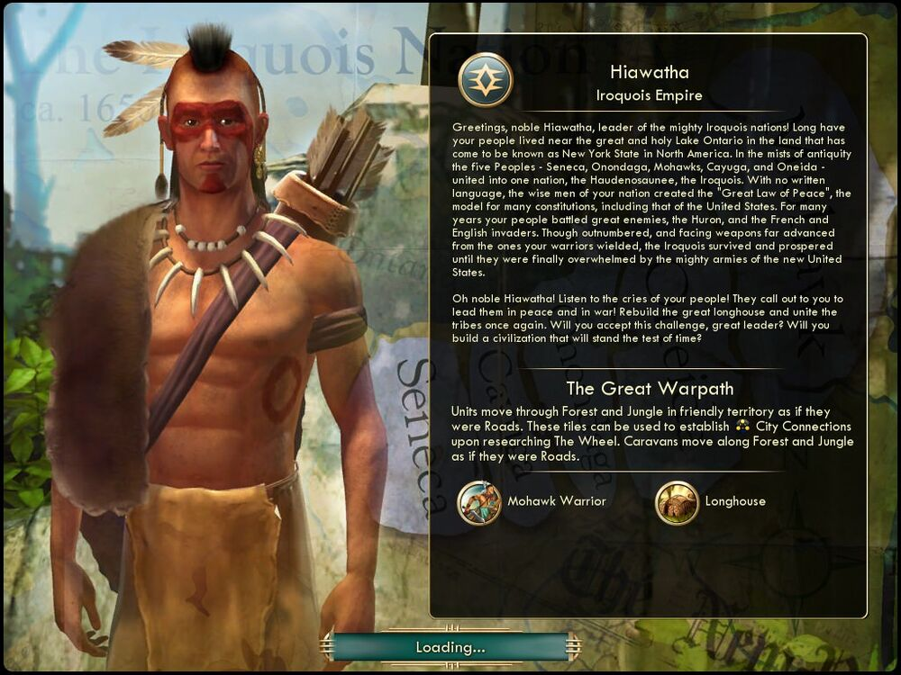

하이어워사 Hiawatha이로쿼이 The Iroquois |
|  |
| 반갑습니다, 고귀한 하이어워사여, 막강한 이로쿼이 연맹의 수장이여! 그대의 백성은 '북아메리카의 뉴욕 주'라고 알려지게 된 위대하고 신성한 온타리오 호수 기슭에 오랫동안 살아왔습니다. 까마득한 옛날에 세네카족, 오논다가족, 모호크족, 카유가족, 오네이다족의 다섯 부족이 하나의 나라 '하우데노사우니'를 이루었으니, 이들을 이로쿼이족이라고 합니다. 그대 나라의 현인들은 문자도 존재하지 않는 상황에서, 미국 헌법을 비롯한 여러 헌법의 모범이 된 '위대한 평화의 법'을 제정했습니다. 이로쿼이족은 오랫동안 휴런족, 프랑스와 영국 침략자 등 강대한 적에 맞서 싸웠습니다. 비록 수적으로 열세였고 부족의 전사들이 사용하던 것보다 훨씬 진보한 무기를 상대해야 했음에도 이로쿼이족은 살아남아 번영하다가, 끝내는 신생 미국의 막강한 군대에 제압당하고 말았습니다.
오 고귀한 하이어워사여! 백성의 부름에 귀를 기울이십시오! 그들은 평화와 전쟁의 시대로 이로쿼이를 이끌어줄 지도자를 갈구하고 있습니다! 도시를 재건하고 다섯 부족을 다시 규합하십시오. 이 시련을 받아들여 세월의 시련을 이겨낼 문명을 건설해 주시겠습니까? |
| 속성 | |
|---|---|
| 특성 |
위대한 출정
(The Great Warpath) 우호적인 영토의 숲과 정글을 도로처럼 사용할 수 있고, 바퀴를 연구하면 이러한 타일을 도시 연결에 사용할 수 있습니다. 대상이 숲 및 정글을 도로처럼 이동할 수 있게 됩니다. |
| 고유유닛 |
모호크 전사
(Mohawk Warrior) 검사를 대체하는 고유 유닛입니다. 숲과 정글에서 전투 시 전투 보너스(33%)를 얻는 진급을 얻습니다. 철을 소모하지 않습니다. |
| 고유건물 |
롱하우스
(Longhouse) 작업장을 대체하는 고유 건물입니다. 생산 비용이 120에서 100으로 줄어듭니다. 원래 작업장 효과에서 생산력 +10%가 없는 대신 도시의 영향권에 속한 숲 타일에서 생산력 1을 추가로 얻습니다. |
| 시작지점 | 숲 |